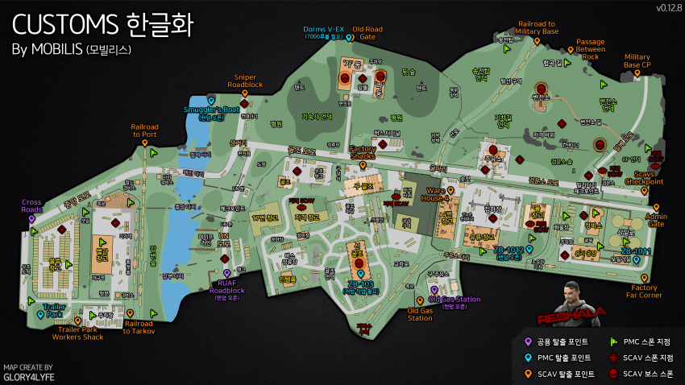

커스텀
커스텀 맵

Setup(세우다)
퀘스트 목표
Customs(커스텀)에서 MP-133 또는 MP-153, Ushanka ear-flap cap, Scav Vest를 입고 PMC 15명 처치하기
퀘스트 보상
- 29,300 경험치
- Skier(스키어) 평판 +0.07
- 100,000 루블(₽)
- LL4 에서 20 pcs. 9x19 mm DIPP ammo box 교환 가능
슈터 본 인 헤븐, 더 가이드 등의 퀘스트처럼 상당한 난도를 자랑하는 퀘스트이다. 타르코프 내부에서 영 좋지 못한 성능을 보유한 샷건으로 PMC를 여럿 죽여야 하며, 이 과정에서 우샨카와 스캐브 조끼를 착용해야 한다.
그나마 쉽게 깨려면 연사가 되는 MP-153에 AP-20 슬러그탄을 장착하고 기숙사로 돌격하거나, 아예 핫플레이스를 피하고 외각만 돌아다니면서 퀘깨러 온 PMC들을 죽이는 게 좋다.